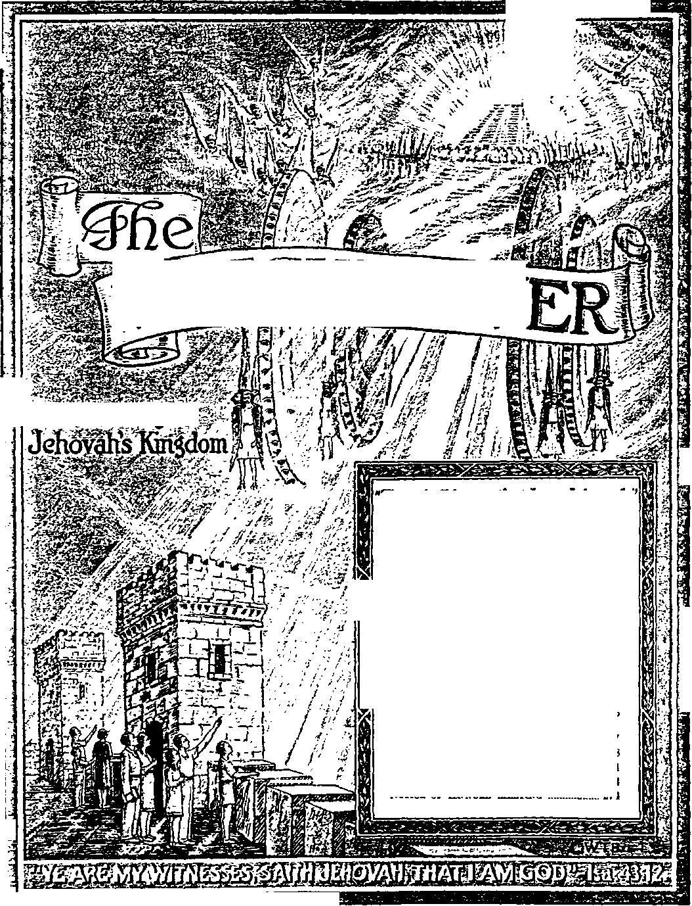

SOS'
a
J
I
4
^essses^ss
Vol. LXVI Semimonthly
SEPTEMBER IS. 1945
CONTENTS
Defense Through Knowledge Fake Knowledge _____________________
Source of Knowledge .............
Knowledge Through Reproof . Practical Use.............................
No. 18
275
277
278
281
282
The Human Dead and Justification .... 284
David the Kino .........................
Watchtower Bible College
Graduates Its Fifth Class
Field Experience.........................
...285
287
288
“Jehovah Reigns” Testimony Period .. 274
“Watchtower” Studies _______
Nones or Annual Meeting
274
274
Si 4 I ■3 -i a
Published Semimonthly By
WATCH TOWER BIBLE & TRACT SOCIETY 117 Adams Street - - Brooklyn 1, N.Y., U.S.A.
OFFICERS
N. H. Knobs, President W. E. Van Amburgh, Secretary “And all thy children shall be taught of Jehovah; and great shall be the peace of thy children." - hatah 54:13.
THE SCRIPTURES CLEARLY TEACH
THAT JEHOVAH is the only true God and is from everlasting to everlasting, the Maker of heaven and earth and the Giver of life to his creatures; that the Logos was the beginning of his creation, and his active agent in the creation of all other things, and is now the Lord Jesus Christ in glory, clothed with all power in heaven and earth, as the Chief Executive Officer of Jehovah;
THAT GOD created the earth for man, created perfect man for the earth and placed him upon it; that man willfully disobeyed God’s law and was sentenced to death; that by reason of Adam’s wrong act all men are born sinners and without the right to life;
THAT THE LOGOS was made human as the man Jesus and suffered death in order to produce the ransom or redemptive price for obedient ones of mankind; that God raised up Jesus divine and exalted him to heaven above every other creature and above every creature’s name and clothed him with all power and authority;
THAT GOD'S CAPITAL ORGANIZATION is a Theocracy called Zion, and that Christ Jesus is the Chief Officer thereof and Is the rightful King of the world; that the anointed and faithful followers of Christ Jesus are children of Zion, members "of Jehovah’s organization, and are his witnesses whose duty and privilege it is to testify to the supremacy of Jehovah, declare his purposes toward mankind as expressed in the Bible, and to bear the fruits of the Kingdom before all who will hear;
THAT THE OLD WORLD ended in A. D. 1914, and the Lord Jesus Christ has been placed by Jehovah upon his throne of authority, has ousted Satan from heaven and is proceeding to the establishment of the “new earth" of the New World;
THAT THE RELIEF and blessings of the peoples of earth can come only by and through Jehovah’s kingdom under Christ, which has now begun; that the Lord’s next great act is the destruction of Satan’s organization and the complete establishment of righteousness in the earth, and that under the Kingdom the people of good-will that survive Armageddon shall carry out the divine mandate to “fill the earth” with a righteous race.
ITS MISSION
THIS Journal is published for the purpose of enabling the people to know Jehovah God and his purposes as expressed in the Bible. It publishes Bible instruction specifically designed to aid Jehovah’s witnesses and all people of good-will. It arranges systematic Bible study for its readers and the Society supplies other literature to aid in such studies. It publishes suitable material for radio broadcasting and for other means of public instruction in the Scriptures.
It adheres strictly to the Bible as authority for its utterances. It is entirely free and separate from all religion, parties, sects or other worldly organizations. It is wholly and without reservation for the kingdom of Jehovah God under Christ his beloved King. It is not dogmatic, but invites careful and critical examination of its contents in the light of the Scriptures. It does not indulge in controversy, and its columns are not open to personalities.
Yeaslt Subscription Price
United States, *1.00; all other countries, *1.90, American currency; Great Britain, Australasia, and South Africa, 6a. American remittances should be made by Postal or Express Money Order or by Bank Draft British, South African and Australasian remittances should be made direct to the respective branch offices. Remittances from countries other than those mentioned may be made to the Brooklyn office, but by International Postal Money Order only.
Foreign Offices
British 34 Craven Terrace, London, W. 2, England Australasian 7 Beresford Road, Strathfield, N. S. W„ Australia
Roeth African Boston House. Cape Town, South Africa Indian 1ST Love Lane. Bombay 27, India
Please address the Society In every case.
Translations of this journal appear In several languages.
ALL SINCERE STUDENTS OF THE BIBLE who by reason of Infirmity, poverty or adversity are unable to pay the subscription price may have The Watchtower free upon written application to the publishers, made once each year, statins the reason for so requesting it We are 6lad to thus aid the needy, but the written application once each year 1 required by the postal regulations.
Notice to Bubeoribere: Acknowledgment of a new or a renewal sub-acriptlon will be sent only when requested. Change of address, when requested, may be expected to appear on address label within one month. A renewal blank (carrying notice of expiration) will be sent with the journal one month before the subscription expires.
Printed in the United States of America
Entered at oecond-elaee matter at the poet office at Brooklyn. N. F., under the Act of March 3, lets.
“JEHOVAH REIGNS” TESTIMONY PERIOD
If you will read, on their appearance, the main articles in our issues of October 1 and 15, you will appreciate how appropriately the Testimony Period during October is designated “Jehovah Reigns”. Those who value properly the unique privilege of now making announcement of Jehovah’s reign will gladly serve as His subjects in the publicity work during the equable month of October. A larger offer of literature will mark this period of worll-wide testimony, namely, two bound books and two booklets, the latest in every possible case, on a contribution of 50c. Instead of decreasing placements, we believe, your report at the month’s close will show an even larger disposal of literature and a more widespread witness accomplished. Of course, many of our readers, wanting to take a hand in this October Testimony Period, will appreciate instructions and companionship. All such should feel free to write us for information and for references to the most convenient group of field publishers.
“WATCHTOWER” STUDIES
Week of October 21: “Defense Through Knowledge," fl 1-18 inclusive, The Watchtower' September 15, 1945. Week of October 28: “Defense Through Knowledge,'’ fl 19-40 inclusive, The Watchtower September 15, 1945.
NOTICE OF ANNUAL MEETING
The annual busmess meeting of the Watch Tower Bible and Tract Society will be held Monday, October 1,1945, at 10: 00 a.m., in the registered office of the Society located in the Wabash Building, 410 Liberty Avenue, Pittsburgh 10, Pennsylvania.
New members have been selected to take the place of the thousands of shareholder-voters, pursuant to the resolutions adopted by the shareholder-voters of the Society on October 2, 1944, and in harmony with the order of the court approving the articles of amendment. Notices and proxy forms will be mailed to the new members. Any member who for any reason cannot attend in person should mail his proxy to the office of the secretary and treasurer of the Watch Tower Bible and Tract Society, 124 Columbia Heights, Brooklyn 2, New York, on or before September 20, 1945.
Because of travel restrictions, there will be no service convention or assembly in connection with the business meeting as in 1944. Only regular business of the Society, election of officers, and the report of the president will be considered at the meeting.
ANNOUNCING JEHOXAH’S KINGDOM
Vol. LXVI September 15, 1945 No. 18
"For wisdom is a defence, money is a defence, and the advantage of the knowledge of wisdom is, she reviveth her possessors."—Eccl. 7:12, Young.
JEHOVAH supplies the only practical defense for the crucial days ahead. None knows better than He the present international condition and what yet faces the nations and peoples in the future. With his foreknowledge thereof, he sees ahead what the nations cannot see or refuse to see by not heeding his warning. His foreseeing the course the nations would take caused him to tell long in advance the outbreak of total war in 1914 and its terrible aftermath of 'distress of nations, with perplexity, men’s hearts failing them for fear, and for looking after those things which are coming on the earth’. (Luke 21:10, 11, 25, 26) It is certain that Jehovah God does not have an international situation on his hands which he did not expect or was not prepared to meet and with which he does not know how to deal.
* Having prescience of just how the nations would act under the present turbulent circumstances and on what course of action they will embark for the future, Jehovah for a certainty knows the outcome. We are not mistaken on that fact, for He has foretold this outcome, for our warning. He is perfectly aware of what he will do when the expected climax comes in future world affairs. Who, then, understands better than he what is the best safeguard against the grim certainties of the future! Being such a provident God, and being so considerate of all humankind, Jehovah could be expected to furnish the effective defense for us against permanent harm from the things he knows are due to come upon the earth and its nations. Jehovah has done so, by making knowledge available. Let us see, then, how knowledge from Him is a sure defense.
’ By whom shall we seek to gain this knowledge! Not by the highly respected religious clergymen, the world statesmen and their international conferences, the social planners and economic wizards of the world. While these have a reputation for great knowledge, it is still proper to question whether they,
1, 2. (a) Why does not Jehovah have on hand an International Bitnation he la not prepared to meet? (b) Why could he be expected to provide a defense for us? and what is It?
3. Why should we not seek to gain such knowledge by means of those in high positions of this world? and what great historic example, warning against this, do we have? either singly or all of them put together, have the proper knowledge. True knowledge is not inseparably connected with high positions in this present world. Nineteen centuries ago the greatest crime in the criminal calendar was committed due to official ignorance. Testimony to this effect we hear in the words of an eyewitness, who said: “Ye denied the Holy and Righteous One, and asked for a murderer to be granted unto you, and killed the Prince of life; whom God raised from the dead; whereof we are witnesses. . . . And now, brethren, I know that in ignorance ye did it, as did also your rulers. But the things which God foreshowed by the mouth of all the prophets, that his Christ should suffer, he thus fulfilled.” (Acts 3:14-18, Am. Stan. Ver.) Another writer, who saw the Victim of the crime, says: “We speak the wisdom of God in a mystery, even the hidden wisdom, which God ordained before the world unto our glory: which none of the princes of this world knew: for had they known it, they would not have crucified the Lord of glory.” (1 Cor. 2:7, 8) The common people blindly followed their blind leaders and shared in the blasphemous crime with the political and religious leaders. What a defense knowledge would have been to them against being carried away in a disastrous course of action!
4 Mindful of Christ’s warning that, “if the blind lead the blind, both shall fall into the ditch,” it is wise for us to make certain one thing: Are the bright-shining world leaders themselves blind to the real facts and to the real issue of this twentieth century! If they are, then they are incapable of leading the people in the safe path of knowledge. So, look at how they visualize the future and how they suggest and plan meeting it. According to all their proposals and recommendations, the greatest threat to mankind in future generations is the repeating of global war, and the direst need of men is security against it. While the prospects of victory of the Allied Nations were looming up in Europe, the representatives of
4. (a) What one thins, then, (bonld we be wise In making certain before following worldly leaden? (b) How did the Dumbarton Oak, Proposals and thereafter the recommendatloni of the American Catholic bishop, visualize the future?
the “Big Four” nations assembled at Dumbarton Oaks, Washington, D.C., from August 21 to October 7, 1944, to frame certain proposals in behalf of an international organization for bringing in an “everlasting peace”. After publication of such proposals the then American secretary of state invited comment thereon from the religious organizations of the land. Accordingly, prominent members of the Roman Catholic Hierarchy, being met together in Washington, D.C., issue a statement. It was signed by seven Catholic archbishops and three bishops and was given nation-wide publicity and has since become propaganda material. After making their recommendations and talking weightily about “moral law”, the hierarchs concluded their statement with this^ which we quote:
We have it within our power to introduce a new era, the era for which peoples have been longing through the centuries, the era in which nations will live together in justice and charity. It is a Christian hope we want to realize, the hope of a world at peace, a world of sovereign states cooperating in assuring all men the full enjoyment of their rights, a world of free men and free nations with their freedom secured under law. War may come, but if our hope is realized it will be a war of punishment meted out to outlaw nations. Through all the sufferings and sacrifices offthis war we have remembered and we recall today the words of our Chief Executive, written at its beginning: “We shall win this war and in victory we shall seek not vengeance but the establishment of an international order in which the spirit of Christ shall rule the hearts of men and of nations.”
Such statement of the hierarchs was circulated in pamphlet form under the title “The Path to Lasting Peace”.
‘ On May 8 this year peace was declared in Europe, and the next day the Vatican chief of those hierarchs prayed openly, by radio for the ears of all the world to hear, for peace in Europe. He quoted the prophecy of Ezekiel 36: 26-28, which applies, not to the nations of this world, but to Jehovah’s consecrated people, His spiritual Israel. But ignoring that fact, Pius XII applied it to the worldly nations when he concluded with these words:
May the Lord God deign to create this new spirit, His spirit, in peoples, and particularly in the hearts of those to whom he has entrusted the responsibility of establishing the future peace. Then and only then will the reborn world’ avoid the return of the thunderous scourge of war and there will reign a true, stable and universal brotherhood, and that peace guaranteed by Christ even on earth to those who are willing to believe and trust in His law of love. [New York Times, May 10, 1945]
* In spite of the sanctimonious tone of both the above Hierarchical statements, both statements
5. Next day after peace la Europe, how did the Vatican’* heed la a radio broadcast visualize the future?
6. What do both those Hierarchical statements betray? and what proper questions do we aak on the bishops' statement? betray a woeful ignorance, a dangerous lack of knowledge. Where can the bishops show from the Bible that the God whom they claim to represent has put it now within man’s power to introduce the era for which people have always longed, in which nations will live together in justice and charity! The “Christian hope” which the bishops say they want to realize, how can it be the hope of the apostle Peter, who told of how God would wipe out this present world and create a new righteous world, saying: ,r\Ve look for new heavens and a new earth according to his promises, in which justice dwelleth”! (2 Pet. 3:13, Douay Version) Those bishops say they hope to see established an international order “in which the spirit of Christ shall rule”. But how do they know that it will not prove to be in actuality the antichris-tian “abomination of desolation” which Christ foretold would arise at this time of human history! —Matt. 24:15.
T Furthermore, where does the prayer of Pius XII show that he takes knowledge of Psalm 45:8-10, which ascribes to Jehovah God the everlasting removal of wars! which psalm says: “The God of Jacob is our protector. Come and behold ye the works of the Lord [Jehovah]: what wonders he hath done upon earth, making wars to cease even to the end of the earth. He shall destroy the bow, and break the weapons: and the shield he shall burn in the fire.” (Douay) The pope’s words about a “reborn world” of true, stable, universal brotherhood and with a “peace guaranteed by Christ even on earth” are catchy. But where do they agree with the words of Christ Jesus when he foretold that this world would end in a time of tribulation such as humankind has never known! (Matt. 24:14-22) In no ways do they agree, but the words of this self-styled “vicar of Christ” are helping to lay the international groundwork for the fulfillment of the prophecy, at 1 Thessalonians 5:3, which reads: “For when they shall say, peace and security; then shall sudden destruction come upon them, as the pains upon her that is with child, and they shall not escape.”—Douay.
• The above statements of both pope and bishops were widely acclaimed by politicians, Protestant preachers, and magazine and newspaper editors and writers. All this reveals the general ignorance all over “Christendom”, in ranks high and low, of what really imperils the nations and peoples. The great peril to all nations is not the outbreak anew of global war between the nations of earth. It is the outbreak of the universal war of Armageddon, between God’s organization and the Devil’s organization, with all nations of the earth on the Devil’s side and against
7. What proper questions do we aak on the pope’s statement? and for what is the pope helping to lay the foundation?
8. (a) What reveals the general ignorance ell over “Christendom”? and what now is the read peril to all nations? (b> What is our defense against being swept along to destruction?
God’s kingdom. The world events since A.D. 1914 agree with sacred prophecy that we have reached the windup of this world organization. The world catastrophe of Armageddon is whither the nations are now marching, even under banners and slogans of peace. There Jehovah God by Christ Jesus the King of His new world will destroy all the backers and upholders of this old world and its institutions. Then, after such destruction, they will establish, without human hands, the promised new world, wherein righteousness dwells with peace forevermore. Only knowledge from God’s Word, the Bible, is a defense against being swept along with the politicians, financiers, and religious clergy in their willful march to destruction at Armageddon.
* The people of today have a right to know that the condition of religious “Christendom” is the modern counterpart of that of ancient Israel, and that Israel’s fate is due upon “Christendom” at Armageddon. Concerning the causes for this Jehovah’s prophet said: “The harp, and the lyre, and the timbrel, and the pipe, and wine are in your feasts: and the work of the Lord [Jehovah] you regard not, nor do you consider the works of his hands. Therefore is my [professed] people led away captive.” Why! “Because they had not knowledge, and their nobles have perished with famine, and their multitude were dried up with thirst. Therefore hath hell [the grave] enlarged her soul, and opened her mouth without any bounds, and their strong ones, and their people, and their high and glorious ones shall go down into it.” (Isa. 5:12-14, Douay) The same lack of defense through the knowledge of God's purposes is shown to be calamitous in God’s further words, saying: “Hear the word of Jehovah, ye children of Israel; for Jehovah hath a controversy with the inhabitants of the land, because there is no truth, nor goodness, nor knowledge of God in the land. My people are destroyed for lack of knowledge: because thou hast rejected knowledge, I will also reject thee, that thou shalt be no priest to me: seeing thou hast forgotten the law of thy God, I also will forget thy children.” (Hos. 4:1, 6. Am. Stan. Ver.) Such prophetic words show forcefully that the peoples cannot look to the Catholic clergy and the Protestant clergy as their priesthood to teach them concerning God and to keep them in line for eternal salvation in the New World of righteousness.
FALSE KNOWLEDGE
10 Religiously inclined people are deceiving themselves when they think that their sacrificial offerings of money to priests and preachers, and the “sacrifice
9 What have al! people a right to know concerning ''Christendom” and her fate? and what prophecies show the causes for thia9
10. How are the people deceiving themselves in connection with the operations of the clergy? and what does God's Word show to be his requirements of such ’ of the mass”, and the religious ritual and ceremonies which the clergymen carry on, actually count with God and will screen them from Armageddon. The straight-thinking, inspired -wise man said: “To do righteousness and justice is more acceptable to Jehovah than sacrifice.” (Prov. 21:3, Am. Stan. Ver.) Some readers may think that the foregoing comments backed up by quotations from prophecy are slaying words against the idolized clergymen. But that it is now high time to be outspoken, let them consider other words of prophecy wherein God declares what he desires of true worshipers of His: “Therefore have I hewed them by the prophets; I have slain them by the words of my mouth: and thy judgments are as the light that goeth forth. For I desire goodness, and not sacrifice; and the knowledge of God more than burnt-offerings.” (Hos. 6: 5, 6, Am. Stan. Ver.) Christ Jesus himself once quoted those words to the religionists of his day, to emphasize that God has not changed in what he desires and requires. God’s requirement of knowledge, especially on the part of those who profess to serve as His priesthood, is again stated, at Malachi 2:7, 8: “For the priest’s lips should keep knowledge, and they should seek the law at his mouth; for he is the messenger of Jehovah of hosts. But ye are turned aside out of the way; ye have caused many to stumble in the law; ye have corrupted the covenant of Levi, saith Jehovah of hosts.”—Am. Stan. Ver.
n The covenant of Levi was concerning the priesthood, and first began with Moses’ brother Aaron, the grandson of Levi. According to titles conferred upon him, the pope of Vatican City and all his hierarchy cannot escape being hit by those words of Jehovah’s prophet Malachi, because in 1150 (A.D.) these words were written to the pope by Bernard, Abbott of Clairvaux: “Who art thou!—The High Priest, the Supreme Bishop. Thou art the Prince of Bishops, thou art the Heir of the Apostles. Thou art Abel in primacy, Noah in government, Abraham in the patriarchal rank, in order Melchizedek, in dignity Aaron, in authority Moses,” etc. From the pope on downward, the clergymen have, by religious creeds, traditions and mummery, kept the people ignorant of the law of Jehovah God and out of harmony with it; and to such clergymen whose lips have not kept knowledge Jesus’ words apply: “Alas for you experts in the Law! For you have taken the key to the door of knowledge, but you have not entered it yourselves, and you have kept out those who tried to enter.” (Luke 11: 52, Goodspeed) Certainly the people who seek true security and protection cannot look to such clergy and their political allies for defense against Armageddon. What the people need is the right
11. Bow do those words of Malachi strike at the pope and all the other clergy? and what do the people need to fortify them against deception? knowledge which will expose such religious and political leaders to them and thus immunize them against the deceptive display of knowledge which those world leaders put on.
11 The people should know that religion is the enemy of Jehovah God, although the religious organizations will not admit that. But from the way all these intermeddle in worldly political, social and commercial affairs, and from the friendly relationship which they all keep up with this old world for respectful appearances, it is plain that such religious organizations do not know what James 4:4 means in saying: “Adulterers, know you not that the friendship of this world is the enemy of God? Whosoever therefore will be a friend of this world, becometh an enemy of God." (Doxiay) Hence it is a defense to the people to know that such spiritual adultery and fornication with this world were foretold at Revelation, chapter 17, where the entire religious organization of this world is pictured as “the great harlot", whose name is Babylon the mother of fornications and who has indulged in spiritual fornication with the political rulers and profiteers and commercial men of this world. (Apoc. 17:1-5, Douay) Furthermore, Jehovah’s prophecy, at Isaiah 23:15-18, forewarned that this religious harlot would be neglected during World War I by the Allied Nations, just as the religious-commercial city of Tyre had been neglected and forgotten long centuries previous. The prophecy shows that, after this religious "harlot” recovered from World War I, she would again try to put on her most winsome appearance and to broadcast the sweetest-sounding propaganda in order to win the political ears of all “Christendom”, including all the democratic, liberal countries, such as America.
11 “Take a harp, go about the city, thou harlot that hast been forgotten: sing well, sing many a song, that thou mayest be remembered.” (Isa. 23:16, Douay) Since the downfall of Nazi and Fascist political dictators, the harlot religious organization is heard singing the most soulful and enticing songs about democracy, moral law, the spirit of forgiveness, the four freedoms, natural rights of man, sovereignty of the nations, the Atlantic Charter, democratic world organization with resources to coerce outlaw nations by military measures, etc., etc. See how the political, social, judicial and literary leaders of the democratic world are falling for the pleasant-sounding mouth of this “strange woman” and are praising her religious beauty and are agreeing that what the postwar world needs is more of her harlotry, disguised innocently as “more religion". What, now, shall the people that love righteousness
12 . For defense, what should the people know about religion and its organization? and what deceptive course did prophecy foretell religion would take after World War 1?
13 . What is the 'forgotten harlot’ now doing, and with what success? do? What is their protection against going along with the captivating religious “strange woman” and falling into the deep pit into which she is leading the nations at Armageddon? Take defense!
14 The defense of the lovers of righteousness is knowledge of God’s Word, which informs us: “My son, attend unto my wisdom, and bow thine ear to my understanding: that thou mayest regard discretion, and that thy lips may keep knowledge. For the lips of a strange woman drop as an honeycomb, and her mouth is smoother than oil: but her end is bitter as wormwood, sharp as a twoedged sword. Her feet go down to death; her steps take hold on hell [the grave]. Lest thou shouldest ponder the path of her life, her ways are moveable [changeable, between Nazi-Fascism and democracy], that thou canst not know them.” (Prov. 5:1-6) “The mouth of a strange woman [Douay] is a deep pit: he that is abhorred of the Lord [Jehovah] shall fall therein.” (Prov. 22:14) The worldly rulers make Jehovah God abhor them by traveling along arm in arm with the “strange woman” of organized religion. Anyone anxious to escape being abhorred by the Lord God and falling into destruction at Armageddon will forsake religion, and will seek knowledge and be guided by it. That is the God-given defense against pious-mouthed religious hypocrites: “An hypocrite with his mouth destroyeth his neighbour: but through knowledge shall the just be delivered.” (Prov. 11:9) The worldly religious and political leaders are educated in theology, political science and diplomacy, international law, etc. What they say to the people may sound like knowledge, yet it is false knowledge.
15 Those who would grasp life in the New World of righteousness are warned against such so-called “knowledge”, which is a part of this world. As the apostle Paul said to a young man whom he was instructing: "Timothy, guard what has been intrusted to you. Keep away from the worldly, empty phrases and contradictions of what they falsely call knowledge, through professing which some people have made a failure of the faith.”—1 Tim. 6: 20, 21, Goodspeed.
SOURCE OF KNOWLEDGE
14 Knowledge, as the word is used in sacred Scripture, means, therefore, information or testimony received from a truthful source. It means not merely the information itself, but also the knowing of it or having it as a part of our mental storehouse and equipment. From the foregoing paragraphs it is manifest that this twentieth-century world with its "brain age” is not the fountain of life-giving knowl-
14. What is the defease against her as stated in God's Word? and how shall we escape being abhorred by the Lord God?
10. What warning do the Scriptures give concerning the false knowledge? 10. What is the meaning of “knowledge”? and how do we begin to gain it? edge. The wise man, who advises us that the knowledge of wisdom is a defense, tells us: “The fear of Jehovah is the beginning [or, the chief part] of knowledge; but the foolish despise wisdom and instruction.” (Prov. 1:7, Am. Stan. Ver.) Man cannot begin to get knowledge if he does not fear Jehovah God. And why not! Because Jehovah is that Truthful Source from which knowledge descends. Concerning godly fear as a requirement for knowledge it is written: “The fear of Jehovah is clean, enduring for ever.” (Ps. 19:9, Am. Stan. Ver.) That means there will always be the fear of Jehovah, because he is the immortal Supreme One, the only true and living God. Those who would live forever must fear him.
” Being clean, the fear of Jehovah has therefore no connection with the superstitious fear and reverence paid to highly titled and gorgeously dressed clergymen and other prominent personages of this old world. The fear of such creatures interferes with the fear of the Creator and finally crowds it out. Hence fear of man leads men into a snare, as captives of those who are against man’s best interests. (Prov. 29:25) It causes men to become servants of such highly esteemed ones of this world and to take part in carrying out all the selfish, unclean things which they think up. The fear of Jehovah safeguards us against such misguided, falsely informed world rulers. The knowledge that has the advantage over money as a protective power does not come from or through such unclean men who try to put other men in fear and awe and reverence of them. It comes from the Creator, who knows all things and from whom none of the rulers defiled with this world can hide their improper deeds. “He that teacheth man knowledge, shall not he know!”—Ps. 94:10.
ia Since God teaches man knowledge, no clergyman or other educated man or scientist can add anything to God’s fund of knowledge. It is foolish for religious priests and monks to taek on human traditions to the written Word of God. It is disrespectful to God for them to say that the knowledge of God as contained in the pages of The Bible is incomplete without these man-made traditions and precepts. Such traditions simply prove to be lies. “Every word of God is pure: he is a shield unto them that put their trust in him. Add thou not unto his words, lest he reprove thee, and thou be found a liar.” (Prov. 30: 5, 6) To gain true knowledge, one must lay aside these traditions of men as being a hindrance rather than a contribution to the knowledge of God. In proof that such religious traditions are not only not necessary but presumptuous, Jehovah’s prophet asks: "Who hath
17. It being clean* with what does the fear of Jehovah have no connection? and from where, then, does knowledge come?
18. Why are the precepts and traditions of men presumptuous? and why must we lay them aside to gain knowledge? directed the spirit of the Lord [Jehovah], or being his counsellor hath taught him! With whom took he counsel, and who instructed him, and taught him in the path of judgment, and taught him knowledge, and shewed to him the way of understanding!” (Isa. 40:13, 14) Those religious precepts and traditions are not a part of the written Word of God, because He did not inspire them and they are no part of the knowledge which He gives.
“ The thoughtful, reasonable person who scans the marvelous works of God in creation feels possessed of a fear of their Creator, without knowing that the Creator’s name is Jehovah. But the nations called “heathen” also survey the wonders of nature and do not fear Jehovah God, but worship the manifestations and forces of nature as gods and thus worship demons, including the “prince of the demons”, Satan the Devil. Therefore, to begin to take on knowledge, the human creature must have an intelligent fear of Jehovah. A mere contemplation of the creative works of God is not enough for us to gain the enlightened knowledge that protects us against man’s great adversary, who misinterprets even the meaning of the wonderful works of God’s creation. It is true that Psalm 19:1, 2 declares: “The heavens are telling the glory of God, and the sky shows forth the work of his hands. Day unto day pours forth speech, and night unto night declares knowledge.” (Amer. Trans.) But the language that such inanimate works of creation speak, and the knowledge that they convey to us, are not sufficient. Their language does not inform us on who God is, what his name is, what his purposes toward distressed mankind are, how his kingdom in the hands of his only begotten Son Christ Jesus will vindicate his name and confirm his universal sovereignty. Even an honest study of our own human bodies and how they were born may impress us deeply 'that the “evolution theory” is a false science and that there is an intelligent Designer and Maker. But that impression does not of itself impart to us the knowledge concerning the mystery of the “body of Christ”, of which Jesus is the Head and the church is his body, nor concerning how Jehovah will yet use His Christ.
” It is clear, therefore, that besides such works of Jehovah God we need knowledge from Him by his express revelation, either by spoken word or by written word. Such revealed knowledge he has given us by his written Word, namely, The Bible. It is complete in our day. It is by that recorded Word of God that we acquire the enlightening information and testimony concerning our Creator, Jehovah.
” Those who reject the Bible cannot know God,
IB. Why ia not the contemplation of the works of creation and of onr own human bodies enongh to give ns the defensive knowledge ’
20. What knowledge, therefore, do we need? and where is It available'’ 21. Why la so-called “higher criticism” not knowledge? and what Is the divine advice for our detenae against it? neither can those who rank human traditions as being of equal authority with the Bible, or who consider a human religious priesthood as more vital and important than it, or who study it from the standpoint of “higher criticism”, so called. “Higher Criticism” is not knowledge. It is simply a religious scheme of Satan the Devil to hide knowledge and confuse men’s mind and keep men in darkness. It puts the “critic” in the conceited position of being superior in intelligence to the Creator of the Bible and having more and better information than the Bible’s Author, so as to be able to criticize it and pass upon its accuracy, genuineness and dependability. “Higher critics” are scoffers at God and are foolish; and the divine advice for our defense against such is: “A scoffer seeketh wisdom, and findeth it not [because not having fear of God]; but knowledge is easy unto him that hath understanding [of his relationship to God]. Go from the presence of a foolish man, for thou shalt not perceive in him the lips of knowledge.” —Prov. 14:6, 7, Am. Stan. Ver., margin.
” Rather than try to find flaws and seeming contradictions in the Bible so as to discredit it in our own eyes, we should approach it as Christ Jesus and his apostles did, namely, as being the written Word of God. We should lift up our voice in prayer to its Author to help us to discern its truths and to understand its depths of learning. We should accept it as the Book containing his Word and commandments. Then, with a love for learning, we should dig into it and search through it, not to uncover doubtful things and stumblingblocks, but to discover precious truths and disclosures of vital information and instruction. These are the directions which God’s own Word gives to us, saying: “My son, if thou wilt receive my words, and lay up my commandments with thee; sa as to incline thine ear unto wisdom, and apply thy heart to understanding; yea, if thou cry after discernment, and lift up thy voice for understanding; if thou seek her as silver, and search for her as for hid treasures: then shalt thou understand the fear of Jehovah, and find the knowledge of God. For Jehovah giveth wisdom; out of his mouth cometh knowledge and understanding: he layeth up sound wisdom for the upright; he is a shield to them that walk in integrity; that he may guard the paths of justice, and preserve the way of his saints.”—Prov. 2:1-8, Am. Stan. Ver.
” The gaining of such truthful information is a defense to one who would abide in God’s safekeeping. It is written: “He shall cover thee with his feathers, and under his wings shalt thou trust: his truth shall be thy shield and buckler." (Ps. 91: 4) To enjoy this
22. How should we approach the Bible? and what direction* does God's own Word give us as to our search for knowledge?
23. How may we enjoy the defense of the truth? defense we must judge everything according to the standard of the Word of God, having faith that God’s Word is true and right. In order to have faith we must be familiar with that Word; and if we have faith we will use the Bible to protect ourselves. This is what the apostle means when saying: “Above all, taking the shield of faith, wherewith ye shall be able to quench all the fiery darts of the wicked.” (Eph. 6:16) Faith is no wooden shield which the wicked one’s darts can stick in and set on fire and burn up, leaving one defenseless; but with faith we can ward off the Devil’s poisoned arrows which are meant to poison the mind and heart against God by an inwardburning doubt, suspicion and faultfinding. Do not therefore neglect or ignore the testimony of the Bible. Its testimony is sure and reliable: “Thy word is truth,” said Jesus, who came down from God and knew him personally.—John 17:17.
14 God is the source of the Bible’s testimony; and that it has saving power, one of the deepest students of the Bible said to a young man: “From a child thou hast known the holy scriptures, which are able to make thee wise unto salvation through faith which is in Christ Jesus. All scripture is given by inspiration of God, and is profitable for doctrine, for reproof, for correction, for instruction in righteousness: that the man of God may be perfect, throughly furnished unto all good works.” (2 Tim. 3:15-17) Knowing the Holy Scriptures is the foundation for wisdom which leads to salvation, because the Scriptures teaeh the fear of Jehovah. Wisdom is in using the knowledge we have according to God’s Word. “Every prudent man worketh with knowledge [using it as his guide]; but a fool flaunteth his folly.” —Prov. 13:16, Am. Stan. Ver.
” Our having knowledge of God through his inspired Book is indispensable for salvation. Tins fact is stressed by these words of Jesus to Jehovah God: “Thou hast given him power over all flesh, that he should give eternal life to as many as thou hast given him. And this is life eternal, that they might know thee the only true God, and Jesus Christ whom thou hast sent. Sanctify them through thy truth: thy word is truth.” (John 17:2, 3, 17) Eternal life is a gift of God through Christ Jesus. To be able to accept that gift we must become acquainted with God and be able to acknowledge him and to know what favors he extends to us. Christ Jesus is God’s channel or agent by which he offers everlasting life to fallen humankind. Christ Jesus is thus used because he is Jehovah’s righteous Chief Servant. The necessity of knowing Christ Jesus is therefore inseparable from that of knowing Jehovah God.
24. Why are the Scriptures the foundation for wisdom? and what Is wisdom ?
25. Why is knowledge of God and of hla Christ through his Word indispensable to human salvation?
” To emphasize the necessity of knowing Christ Jesus in order for condemned human creatures to be justified to eternal life, Jehovah’s prophecy long ago declared concerning his Servant Christ Jesus: “He shall see of the travail of his soul, and shall be satisfied : by the knowledge of himself shall my righteous servant justify many [or, make many righteous]; and he shall bear their iniquities.” (Isa. 53:11, Am. Stan. Ver.) That is, by knowing Jehovah’s righteous servant Christ Jesus and how he suffered affliction in order to prove worthy to bear away our iniquities; and then by exercising faith in such knowledge of Christ Jesus, he becomes God’s means of justifying the believers to eternal life. Not all will accept and gain such knowledge of him and have faith in it, but as many as do so will receive “justification of life”. —Rom. 5: 18.
21 When a self-sufficient, self-reliant, self-righteous man turns down the instruction contained in the Bible concerning God and his Christ, such man is acting against his life interests. His willful ignorance opens him up to the wily approaches of those who seek his hurt. It dooms him to destruction. “He shall die for lack of instruction; and in the greatness of his folly he shall go astray.” (Prov. 5: 23, Am. Stan. Ver.) But the honest person that has really gotten acquainted with the Creator and has experienced his good dealings wants to know more about him, to serve him better. He says: “Thou hast dealt well with thy servant, 0 Jehovah, according unto thy word. Teach me good judgment and knowledge; for I have believed in thy commandments.” (Ps. 119:65, 66, Am. Stan. Ver.) Since God is the central source of information and knowledge, then the man that pleases him is the one that grows mentally and does not at last suffer from the vanities of this world. “For God giveth to a man that is good in his sight wisdom, and knowledge, and joy: but to the sinner he giveth travail, to gather and to heap up, that he may give [it] to him that is good before God. This also is vanity and vexation of spirit [for the sinner].” (Eccl. 2:26) Because the religionists are not good in God’s sight, they are “ever learning, and never able to come to the knowledge of the truth”. They make the mistake of looking to the religious clergy for guidance and instruction, because the clergy are those “having a form of godliness, but denying the power thereof”.—2 Tim. 3:1-7.
KNOWLEDGE THROUGH REPROOF
” Some of the foregoing paragraphs may be hard things for some persons to take. But not all the
26 How la the need of knowing Chriat Jeeua in order to be justified to life foretold by Isaiah? and what do bit word* mean?
27. (a) For what doea the foolish die, and wbat does one acquainted with God seek? (b) As to growing mentally, what is the difference between one that pleases God and the sinner?
28. Why is not aU true instruction at first pleasant to take? and bow have lovers of knowledge received it, and bow the stupid ones? instruction that Jehovah God gives is at first pleasant to take. If, however, it is meekly received and acted upon, it brings grateful results. This is because some of God’s instruction comes in the form of reproofs and corrections, and wisely so. Such reproofs and corrections are very timely and necessary to keep His servants at doing the right thing and walking in the safe way amid this misguided world. The Bible reveals that all of Jehovah’s witnesses in the past, aside from Christ Jesus himself, made mistakes and needed correction. On this account Jehovah God reproved them by his word, either written or expressed verbally by his prophets. Likewise in modern times Jehovah’s witnesses have made mistakes in view of their own imperfections and their being surrounded by a religious world. By the reproofs of his Word God has mercifully enlightened them and brought them to their senses. The “evil servant” class has taken offense at such reproofs and corrective measures; but the meek and prudent servants of Jehovah have submitted to them gratefully and have learned thereby. Thus the proverb is proved: “Whoso loveth instruction [or correction] loveth knowledge: but he that hateth reproof is brutish [stupid].”—Prov. 12:1.
” Receiving the reproof in the right way, the “faithful and wise servant” class do not become spiritually poor, but are honored of God with further privileges of serving him: “Poverty and shame shall be to him that refuseth instruction [correction]: but he that regardeth reproof shall be honoured.” —Prov. 13:18.
’’Because those who scoff at Jehovah and at his organization do not enjoy taking instruction by way of reproof, they shy away from God’s Word and from his faithful witnesses, and thus turn aside to the unwise world. But whoso desires to learn is not afraid to face reproof and to take it with benefit to himself. “A scorner loveth not one that reproveth him: neither will he go unto the wise. The heart of him that hath understanding seeketh knowledge: but the mouth of fools feedeth on foolishness [and thus talks foolishly and ignorantly].” (Prov. 15:12, 14) Jehovah does not hesitate to correct his people, because he is faithful to them and he knows it will benefit them. He inspired the proverb, knowing that it is true, namely: "Smite a scoffer, and the simple [by observing this] will learn prudence; and reprove one that hath understanding [of his imperfect, sinful condition before God], and he will understand knowledge.” (Prov. 19:25, Am. Stan. Ver.)
29. Why, therefore, here the “faithful and wise servant” clau not become spiritually poor?
30. (a) What la the course of the scoffer and of the learner as to instructive reproof? (b) Why does Jehovah not hesitate to correct his people, according to the proverbs?
“When the scoffer is punished, the simple is made wise; and when the wise is instructed, he receiveth knowledge.” (Prov. 21:11, Am. Stan. Ver.) For such reason the apostle Paul instructed one of the governing body of the “church of God” to put a public reproof upon an openly committed wrong in order to benefit the observing Christians. He said: “Them that sin reprove in the sight of all, that the rest also may be in fear.”—1 Tim. 5:20, Am. Stan. Ver.
" Hence, when anyone is reproved through Jehovah’s Theocratic organization by its representatives, we do the reproved one a mistaken kindness if we try to show him sympathy by helping him to justify himself and make him feel he has been injured by reproof. Contrariwise, we ourselves should search to see the justice of the reproof and help the one reproved to see that point. Then we ourselves should try to learn from such observation how to make straight paths for our own feet, walking in the fear of Jehovah lest we displease him. It is the course of wisdom not to rebel against correction from the Holy One Jehovah through his Theocratic organization. The proverb shows who is the wise and righteous man by saying: “Give instruction to a wise man, and he will be yet wiser: teach a righteous man, and he will increase in learning. The fear of Jehovah is the beginning of wisdom; and the knowledge of the Holy One is understanding.” (Prov. 9:9, 10, Am. Stan. Ver.) The appreciation of one’s proper relationship to the Holy One Jehovah is understanding, and it leads one to the wholesome fear of Him.
” “Christendom” has no such knowledge and understanding, and she rebels against the reproofs which God sends against her through the message of His witnesses. For her willful ignorance she will be destroyed at the battle of Armageddon. Those who want to avoid her fate will not resist the information and the reproofs which she refuses. Without first knowing what is the will of God, they would be hastening down the same path of sin in which she hurries toward Armageddon, and would show themselves foolish. The end would not be a good one. Hence knowledge is their defense, to be without which it is not good for us. God’s Word says: “Also, that the soul be without knowledge, it is not good; and he that hasteth with his feet [without stopping first to ascertain God’s will], sinneth. The foolishness of man subverteth his way; and his heart fretteth against the Lord.” (Prov. 19:2, 3; Am. Stan. Ver.) If our business fails because of our own foolishness and we fret against Jehovah God and blame him therefor, it will do us no good. We could have pro-
31. Why not help ft reproved one to justify himself? and why not rebel against correction through God’s organization?
32. For whst will ’‘Christendom’', therefore, be destroyed at Armageddon? and why is it not good now to be without knowledge? tected ourselves against such a result by seeking beforehand information on God’s will.
PRACTICAL USE
** Without proper instruction man’s feet are hasty to run into sin, and it is therefore not good for souls to be without knowledge. Only with knowledge can we perceive the general ignorance in which many righteously disposed persons in the world find themselves, and we appreciate that it is not good for them in view of what is coming. The wicked do not do anything about it, to help these into the light of truth, but rather they scheme to keep them in mental darkness. Though the wicked recognize it not, those poor people, regardless of race, nationality, or color, and religious connections, have a right to come to a knowledge of the truth. If we desire to do what is righteous, we will recognize the people’s absolute lack of defense against what is impending over the world at Armageddon, and we will be diligent to give such endangered ones what is due them, by informing them of the danger and pointing out the way of escape. “The righteous taketh knowledge of the cause of the poor; the wicked hath not understanding to know it.”—Prov. 29: 7, Am. Stan. Ver.
’* How could we show respect for the right or the cause of the poor except by giving to them the knowledge of Jehovah and his kingdom by Christ Jesus T This is of greater value than money, and it is a greater defense. The worldly-wise are vainly heaping up treasures of wealth and of selfish things for these ‘Hast days”. At Armageddon they will throw their silver and gold and material wealth into the streets, but neither their silver nor their gold will be able to deliver them in the day of Jehovah’s anger and to buy a way for their lives to be spared. (Ezek. 7:19; Zeph. 1:18) Whereas money may be a temporary defense now, our knowing Jehovah and his purpose is a permanent defense against disaster at Armageddon. Thus it has the advantage of money and is more excellent than it. “For wisdom is a defence, and money is a defence: but the excellency of knowledge is, that wisdom giveth life to them that have it.”—Eccl. 7:12.
” God therefore favors us with the information and testimony concerning himself and his Theocratic Government in order that we may make practical use of it, for the benefit of others as well as of ourselves. Knowledge is not for our own defense merely, but is given us that we may also impart it to others who have as much right to receive it as we had. The knowledge we have we must use aright, not just tc
33. Id what condition do we find the righteously disposed people In the world to be? end whftt is the righteous thing to do shout It?
34. How do we show respect for the cause of the poor? and why not give them money?
36. Why, therefore. Ie knowledge given to us? end how does the wise tongue use it aright?
show off with it and to engage in controversies and to provoke wrath in others, but to speak tactfully in love, seeking the welfare of others thereby. “A soft answer turneth away wrath: but grievous words stir up anger. The tongue of the wise useth knowledge aright: but the mouth of fools poureth out foolishness.” (Prov. 15:1, 2) It is the truth spoken in love that edifies and constructs; and it is the loving method that the Scriptures recommend for those who endeavor to be educators of others in God’s Word of truth. (Eph. 4:15) The wise do not seek controversies. Yet, if to give out the knowledge of the Lord to others means to rouse up persecution and opposition from this world and its institutions, then we suffer it, but do not slack our hand in our educational work.
“ What a precious privilege it is to be bearers of the Lord’s knowledge to others! Just to think how priceless is the instruction with which we are entrusted makes us appreciate the more how rare and honored a privilege it is for us to transmit it to others. Glittering gold, purified silver, and sparkling jewels, are not comparable with it. The enrichment we experience by receiving it is described by one wiser than Solomon, namely, Christ Jesus, who says to us: “Receive my instruction, and not silver; and knowledge rather than choice gold. For wisdom is better than rubies; and all the things that may be desired are not to be compared unto it. I wisdom have made prudence my dwelling, and find out knowledge and discretion.” (Prov. 8:10-12, Am. Stan. Ver.) Such spiritual treasure is rare and costly and beyond compare, and not everywhere to be found. So are those from whose lips fall such preciousness. “There is gold, and abundance of rubies: but the lips of knowledge are a precious jewel.” (Prov. 20: 15, A.S. I7.) Those possessed of such lips of knowledge are as rare as a precious, much-sought-after jewel. Their lips are pure lips, graced with the pure message of God’s glorious purpose by his kingdom.
” Those who have such lips, which show forth God's praises, have Him as their Friend. They are rich, more so than if they gained all this world, because they have God’s friendship and the friendship of his King Christ Jesus. They have the knowledge of both the Father and the Son which gives life, and they are commissioned by the Father through his Son to impart such life-giving knowledge to the meek ones of the earth. For being enriched with this service they can give thanks, as the apostle Paul did, saying: “I thank my God always on your behalf, for the grace of God which is given you by Jesus Christ; that in every thing ye are enriched by him, in all
36 How does such knowledge and the privilege of speaking 1c forth compare with the mineral treasures of this earth?
37 Why are those with such lips of knowledge so rich? and tor wb&t does the apostle show they should thank God? utterance, and in all knowledge.” Or, put in other phrase: “I am always thanking God about you, for the blessing God has given you through Christ Jesus. For you have grown rich in everything through union with him—in power of expression and in capacity for knowledge.”—1 Cor. 1:4, 5; Goodspeed.
“ The utterance of the truth to others stirs up our own minds and thus impresses the truth more deeply and clear-cut upon ourselves. Thus we increase our own capacity for knowledge. By utterance or by use of the power of expression we enjoy the rich privilege of spreading knowledge to the poor, whose right to hear it we respect. Such knowledge is cheering, being likened to light falling upon eyes that have known only darkness before: “the light of the knowledge of the glory of God in the face of Jesus Christ.” (2 Cor. 4: 6) Those who have this light shining into their hearts from on high must, out of pure hearts, reflect that light upon others.
“ The knowledge concerning the presence of Jehovah’s King and the establishment of his kingdom of truth and life is also likened to the fragrance of incense burned at a triumphal procession. How fragrant indeed is the knowledge of Jehovah God and his kingdom by Christ Jesus! How thankful we all should be to possess this knowledge that we might follow along after our triumphant Leader Christ Jesus in disseminating the knowledge of God to those who want life in harmony with him! “Thanks be unto God, who always leadeth us in triumph in Christ, and maketh manifest through us the savor [the perfume] of his knowledge in every place. For we are a sweet savor of Christ unto God, in them that are saved, and in them that perish; to the one a savor from death unto death; to the other a savor from life unto life.”—2 Cor. 2:14-16, Am. Stan. Ver.
40 Those who are destined to perish think that the savor of our message is death-dealing. Shall we be influenced by their.opinion! No; but, knowing that the knowledge of God is a defense against death by execution in the day of his wrath at Armageddon, let us cast up this defense more strongly. Let us do so in behalf of as many people as possible by repeatedly, persistently and intensively making known everywhere the knowledge of Him, cost us what it may in hardships. In that manner we shall prove ourselves true servants of God: “in everything commending ourselves, as ministers of God, in much patience, in afflictions, in necessities, in distresses, . . . in pureness, in knowledge.”—2 Cor. 6: 4-6, Am. Stan. Ver.
38. How do wo by utterance Increase our capacity for knowledge? and to what thing of cheer la such knowledge compared?
39. To what else does the apostle liken such knowledge? and for wbat privilege tn that connection can we be thankful?
40. Knowing that knowledge of God Is a defense, what shall we do and thus prove ourselves bis true servants?
IN THE August 15 issue of The Watchtower it was said, on page 253, fl 15, that for the dead people in the grave for whom there is a future opportunity to gain eternal life on earth in the New World of righteousness no automatic justification in advance is possible. Nor is it required for them in order that they may be brought forth from the graves. This statement was made in connection with a discussion of Romans 5:18, which reads: “Therefore as by the offence of one judgment came upon all men to condemnation ; even so by the righteousness of one the free gift came upon all men unto justification of life.”
From a certain quarter it has been suggested that such a justification of the dead to life should be possible, seeing that the Bible says that God calls the things which be not as though they were; and that therefore he could call the dead people just, although they were yet non-existent in death and were not actually just. However, a Scriptural study of the matter will show the fallacy of such a suggestion.
The question involves Abraham, whose name means “father of a multitude”. It is in connection with the patriarch by this name that the Bible says that God called things which were not as though they were. Here is the scripture thereon, at Romans 4:16, 17, namely: “The faith of Abraham; who is the father of us all, (as it is written, I have made thee a father of many nations,) before him whom [Abraham] believed, even God, who quickeneth the dead, and calleth those things which be not as though they were.”
At the time that Jehovah God called Abram by the name of “Abraham”, Abram was no father of a multitude nor a father of many nations. He was ninety-nine years old, and had no son by his aged wife Sarah. They were both as good as dead, as far as it concerns the bringing forth of children. (See Hebrews 11:11, 12 and Romans 4:18-21.) But God, by his spirit or active force, made their reproductive powers alive again, as though they had been restored to the days of their youth. By this miracle they became parents to their only son Isaac. Abraham’s descendants through this son Isaac became a multitude like the stars and sands in number, but that was centuries later in coming true. So, then, in calling that patriarch by the new name “Abraham” (meaning “father of a multitude”) and in then making the name come true, Jehovah God was assuredly giving life to the dead and was calling things as being something that they were not as yet.
Nevertheless, this procedure does not warrant us in applying Romans 4:17 (quoted above) to the dead people in the graves in support of their being automatically justified in order to make them worthy to be called forth out of death. Do not overlook the fact that what God called Abraham actually became true of Abraham. God quickened or enlivened both Abraham’s and Sarah’s physical powers in order that it should come to pass. Why did God do so? and did he do so arbitrarily? No; it was because Abraham was believing and was faithful to God that Jehovah God did so. There is nothing parallel to those circumstances in connection with the human dead in the graves. If God were to arbitrarily call the human dead justified to life, although they were not, it would mean that he thereby predestinated all the thus justified dead to be obtainers of everlasting life
and that none of them would fail to obtain it. But the Scriptures show that such will not be the case. Not all the human dead in the graves will be “accounted worthy to obtain that world, and the resurrection from the dead”. (Luke 20:35; Rev. 20:12-15) Always remember that Abram’s change of name to “Abraham” was based on his faith in God; whereas none of the human dead that have “done evil” have exercised faith in God like Abraham’s faith.
It is written: “As the body without the spirit is dead, so faith without works is dead also. Was not Abraham our father justified by works, when he had offered Isaac his son upon the altar? Seest thou how faith wrought with his works, and by works was faith made perfect ? And the scripture was fulfilled which saith, Abraham believed God, and it was imputed unto him for righteousness: and he was called the Friend of God. Ye see then how that by works a man is justified, and not by faith only.” (Jas. 2:26, 21-24) As against Abraham’s faith and works, the Bible states that the dead are incapable of faith and incapable of works, because “the dead know not any thing, . . . for there is no work, nor device, nor knowledge, nor wisdom, in the grave, whither thou goest”. (Eccl. 9:5, 10) Such a state of the dead in the graves does not operate to their being justified before being brought forth from the tombs. Such a state of the dead is no basis for God to deal with them as he did with Abraham by calling them as being something that they were not as yet.
The works that are required are works of faith. It is true that God’s imputing of righteousness to men without the works of the Mosaic law is described by the psalmist, at Psalm 32:1, 2, which reads: “Blessed is he whose transgression is forgiven, whose sin is covered. Blessed is the man unto whom the Lord imputeth not iniquity, and in whose spirit there is no guile.” (Rom. 4:6-8) But the psalmist’s next words show that such imputation of righteousness or such justification did not come to him automatically. As long as he failed to take the right action in the matter, his transgression and sin rested upon him, and heavily so. As he says: “When I kept silence, my bones waxed old through my roaring all the day long. For day and night thy hand was heavy upon me: my moisture is turned into the drought of summer. Selah.” (Ps. 32:3, 4) The mercy of God in imputing no iniquity to him and thus canceling out his sin did not come to the psalmist until after he had confessed to God and appealed for divine mercy. In proof of this he says: “I acknowledged my sin unto thee, and mine iniquity have I not hid. I said, I will confess my transgressions unto the Lord; and thou forgavest the iniquity of my sin. Selah. For this shall every one that is godly pray unto thee in a time when thou mayest be found.”—Ps. 32: 5, 6.
However, as for the dead who are in the silence of the grave, they cannot make confession of sin nor appeal for mercy preliminary to gaining justification. “For hell shall not confess to thee, neither shall death praise thee: nor shall they that go down into the pit, look for thy truth. The living, the living, he shall give praise to thee, as I do this day: the father shall make thy truth known to the children.” (Isa. 38:18, 19, Douoy Version) The Roman Catholic doctrine of “purgatory”, which provides for the dead
to be justified by the substitutionary works on the part of their living friends, is absolutely contrary to the Holy Scriptures.
Take, now, the case of the peoples of the world: they are Scripturally pronounced to be “dead in trespasses and sins”, because they have not been justified before God, even since Christ Jesus died. Only by reason of faith in Christ and obedience toward God have the Christians come out of that dead condition and been justified by faith. To such Christians of faith it is written: “And you hath he quickened, who were dead in trespasses and sins; wherein in time past ye walked according to the course of this world.” (Eph. 2:1, 2) The other humans who are actually laid away in the graves are in a complete sense “dead in trespasses and sins”. Now, why should anyone deduce from Romans 5: 18 or any other Bible text that all the dead in the graves have justification thrust upon them automatically by Christ’s death and by the arbitrary, unilateral act of God, whereas sinners and trespassers who are not yet in the graves cannot gain justification except by exercising faith? If faith is required of those who are pronounced “dead in trespasses and sins” (hence not justified) this side of the grave, then reasonably faith must likewise be required of those already in the graves, if they are to be justified. We know that the Jews, acting without faith, could not gain justification with God by their works. How, then, could the dead gain justification, having neither works nor faith ? It is therefore unreasonable and unscriptural to refer to God’s procedure in calling things that were not yet true of Abraham as though they were, and then to say that in such a manner Romans 5: 18 is fulfilled toward the dead and that thus justification to life has automatically reached the dead people in the graves.
Finally, the Scripture truth which definitely proves that all the human dead in the graves are not automatically justified or not automatically accounted as just is stated by the apostle Paul and by Christ Jesus. Paul states. “There shall be a resurrection of the dead, both of the just and unjust.” (Acts 24:15) If all the human dead were automatically justified while in the graves, how could there be “unjust” ones to resurrect? But that a prior justification is not necessary in order for them to rise from the graves, and that there will be unjustified ones to resurrect, Jesus verifies, saying: “The hour is coming, in the which all that are in the graves shall hear his voice, and shall come forth; they that have done good, unto the resurrection of life; and they that have done evil, unto the resurrection of damnation [or, judgment].” (John 5:28, 29; Am. Stan. Ver.) These, therefore, that come forth unto the resurrection of judgment come forth unto a period of trial and testing, to be followed by the rendering of the divine judgment through Christ Jesus the King of the New World of righteousness.
If their works then while on trial are in obedience to the King and hence in harmony with righteousness, the King’s power will gradually lift them to human perfection and to actual righteousness in the flesh. Then, when Satan is loosed at the close of the thousand-year reign of Jesus Christ they will be able to resist him with integrity, in perfect righteousness. If they so do, then Jehovah God, who is the ultimate Justifier, will pronounce them just and right, and that means that he will grant to them through Christ Jesus their Redeemer the right to everlasting life on earth as the human sons and daughters of God. Thus their “justification of life” will be complete, and it mil be a free gift of God, all due to the righteous act of Christ Jesus in accomplishing the redemption of obedient creatures on earth.
The entire discussion above, therefore, agrees with the Scriptural explanation of Romans 5:18, as submitted to our readers in the August 15 issue of The Watchtower, to wit, that the expression “upon all men unto justification of life” means upon all such men as exercise faith and come into harmony with God’s provision through Christ for justification, regardless of whether they be Jews or Gentiles. Rather than being automatically justified by the arbitrary, one-sided action of God, men must “seek to be justified by Christ”.—Galatians 2:17.
WITH the death of King Saul, it was no more a case of David the outlaw. Now it was to be David the king. “And it came to pass after this, that David enquired of the Lord, saying, Shall I go up into any of the cities of Judah? And the Lord said unto him, Go up. And David said, Whither shall I go up? And he said, Unto Hebron. So David went up thither, and his two wives also, Ahinoam the Jezreelitess, and Abigail, Nabal’s wife, the Carmelite. And his men that were with him did David bring up, every man with his household: and they dwelt in the cities of Hebron. And the men of Judah came, and there they anointed David king over the house of Judah.” (2 Sam. 2:1-4) After a bloody war between the house of Saul and the house of David, “all the elders of Israel came to the king to Hebron; and king David made a league with them in Hebron before the Lord : and they anointed David king over Israel. David was thirty years old when he began to reign, and he reigned forty years. In Hebron he reigned oyer Judah seven years and six months: and in Jerusalem he reigned thirty and three years over all Israel and Judah.”—2 Sam. 3:1; 5:1-5; 1 Chron. 11:1-9.
David’s reign was one of many wars. Toward the end thereof he said to his son Solomon: “My son, as for me, it was in my mind to build an house unto the name of the Lord my God: but the word of the Lord came to me, saying, Thou hast shed blood abundantly, and hast made great wars: thou shalt not build an house unto my name, because thou hast shed much blood upon the earth in my sight.” (1 Chron. 22: 7, 8) This does not mean to say that David’s wars were without divine approval. On the contrary, this Theocratic king made his military moves only after ascertaining Jehovah’s will in matters, and his campaigns were blessed to the extent of bringing within the control of the typical Theocracy all the territory ordained for it by the great Theocrat, Jehovah God. Note, for instance, the two engagements immediately following his enthronement: Hearing of the establishment of David as king over all Israel, the Philistines determined to smash him before he became organized and strengthened. David moved his army into rugged, easily defended country, and “enquired of the Lord, saying, Shall I go up to the Philistines 1 wilt thou deliver them into mine hand? And the Lord said unto David, Go up: for I will doubtless deliver the Philistines into thine hand”. Jehovah broke forth against the enemy like a mighty flood of waters. But they returned yet again, and David enquired again of the Lord, and gained another victory by following the battle instructions of Jehovah of hosts.—2 Sam. 5:17-25.
So it was throughout the wars of David. He inquired of the Lord, the Lord gave the instructions, and victory followed. The Philistines, Moabites, Ammonites, Edomites, Syrians, all fell under the onslaughts of the first king of the typical Theocracy. It mattered not whether the heathen nations came singly or in confederacies; the result was always the same: victory for King David. (2 Sam. 8:1-15; 10:6-19; 1 Chron. 20:1-8) David made no secret of his success as a warrior, but in songs of praise acknowledged Jehovah as the Giver of victory: “Jehovah is my rock, and my fortress, and my deliverer, even mine; God, my rock, in him will I take refuge; my shield, and the horn of my salvation, my high tower, and my refuge; my saviour, thou savest me from violence. I will call upon Jehovah, who is worthy to be praised: so shall I be saved from mine enemies.” Also, “Blessed be Jehovah my rock, who teacheth my hands to war, and my fingers to fight.”—2 Sam. 22: 2-4; Ps. 144:1; Am. Stan. Ver.
One of David’s victories brought to him mourning. It was a civil war, fomented by one of his own sons, Absalom. After worming himself into the good graces of large numbers of Israelites by hypocrisies and flatteries, this son made a treasonable bid for the throne. So great was his initial success that David had to flee Jerusalem and beyond the Jordan, but when the king’s forces finally locked in battle with the hosts under Absalom, that one’s grab for power ended in defeat for his army and death for himself. David mourned greatly for his comely son.—2 Sam. 15: 1-14; 16:11; 18:1-15, 32, 33.
There is one other conspiracy to grab the throne during David’s reign. This was headed by Adonijah, who aspired to be set upon the throne at a time when David was old. He was aided in his plot by the general of David’s army, Joab, and by the priest Abiathar. The plotters were frustrated. Had not Jehovah promised David that his son Solomon should reign in his stead? On hearing of Ado-nijah’s scheme David acted quickly. He instructed Zadok the priest and Nathan the prophet to take Solomon to Gihon and there anoint him as king of Israel. So it was done; and upon the blowing of the trumpet at the time of anointing the people shouted joyously, “God save king Solomon.” Adonijah and his co-conspirators heard the earth-ringing cries, learned the cause thereof, and scattered in terror.—1 Ki. 1: 5-49.
But one should not conclude that David was zealous for God’s cause only in battle. He was much concerned with the proper observance of worship of Jehovah, as outlined in the law of Moses. Since the time of the capture of the ark of God by the Philistines in the days of high priest Eli, and its seven months of captivity, the ark had remained in Kirjath-jearim. (1 Sam. 7:2) David took steps to have it brought up to Jerusalem. Disaster marked the first effort, due to improper handling of the sacred ark, and it got no farther than the house of Obed-edom, where it remained for three months. (1 Chron. 13:1-14) Later understanding his error and realizing that only Levites should be entrusted with the charge of carrying the ark of the covenant, he thereafter caused the holy object to be properly conveyed to Jerusalem, amid great singing and rejoicing. —1 Chron. 15:1-5, 12-15, 25-28.
He was not content to allow the ark to abide only in a tabernacle, but desired to build a glorious house as a more fitting abiding place for it. He refrained from so doing only by the intervention of Jehovah himself, through the prophet Nathan. (1 Chron. 17:1-15) The divine will was that the house or temple should be built by Solomon, whose reign was characterized by peace. Nevertheless, David did have a share in the glorious work. He said: “Solomon my son, whom alone God hath chosen, is yet young and tender, and the work is great; for the palace is not for man, but for Jehovah God. Now I have prepared with all my might for the house of my God the gold for the things of gold, and the silver for the things of silver, and the brass for the things of brass, the iron for the things of iron, and wood for the things of wood; onyx stones, and stones to be set, stones for inlaid work, and of divers colors, and all manner of precious stones, and marble stones in abundance.”—1 Chron. 29:1, 2, Am. Stan. Ver.
David’s part in the temple-building did not end with the assembling of building materials. Through him Jehovah God supplied patterns, or what would today be called “blueprints”. (1 Chron. 28:11-19) All man-power needs, including skilled laborers, were provided for. (1 Chron. 22:15-19; 28:21) Thus all that King Solomon had to do was see to it that the work was carried out, and that in accord with the patterns shown him by his father David. He only needed to supervise. All the people of Israel, from King David down, had given willingly of their possessions for the temple work. (1 Chron. 29:3-19) But even in this King David’s depth of understanding caused him to give the credit to whom it was due: “But who am I, and what is my people, that we should be able to offer so willingly after this sort? for all things come of thee, and of thine own have we given thee. For we are strangers before thee, and sojourners, as were all our fathers: our days on the earth are as a shadow, and there is none abiding. 0 Lord our God, all this store that we have prepared to build thee an house for thine holy name cometh of thine hand, and is all thine own.”—1 Chron. 29:14-16; Ps. 24:1.
David was not without sin; he was an imperfect human creature. Two of his transgressions stand out in the Biblical record. “Satan stood up against Israel, and provoked David to number Israel.” After the king had done this, he realized his error, and repented. He was given a choice of one of three things to come as punishment: three years’ famine; three months to be destroyed before his foes; or three days’ pestilence from the Lord. David did not hesitate : “Let me fall now into the hand of the Lord ; for very great are his mercies: but let me not fall into the hand of man.” (1 Chron. 21:1-14) The other instance of transgression was concerning Uriah and his wife, Bath-sheba. God’s prophet, Nathan, said: “By this deed thou hast given great occasion to the enemies of the Lord to blaspheme.” To this day religionists, enemies of the Lord, heap abuse upon King David for his fleshly weakness on that occasion. But the great Judge Jehovah fixed the penalty and executed it, and the matter was settled back there by the one to whom David was accountable. King David was no privileged character; he was not beyond the reach of the divine law.—2 Sam. 12:11-19; 16:22.
David was used by the Lord to write many psalms. Some of them he wrote during the time that he was harassed and hunted as an outlaw by jealous King Saul. All of his writing reflects on his part a remarkable understanding of his relationship to the Most High God, Jehovah, and displays always a spirit of utmost humility. How unlike rulers of today was this first king of Jehovah’s typical Theocracy! But for the same reason, how well did he typify the meek and lowly Christ Jesus, the King now enthroned in the heavenly and eternal Theocracy! Jesus as a perfect man on earth was, by natural descent, from King David, and was spoken of both as “David” and as the “Son of David”. That name means “beloved”, and it befitted the One of whom Jehovah said: “This is my beloved Son, in whom I am well pleased.” Some of David’s inspired psalms pointed forward particularly to Christ Jesus when He was on earth. (Pss. 22; 40; 2 Sam. 23:2) That David, the son of Jesse, did picture Christ Jesus is shown at Isaiah 11:1-5. As humble King David subdued in battle all God’s enemies in the typical Theocracy, so at Armageddon’s fight the Greater David, Christ Jesus, will clear out all anti-Theocratic forces and will extend and cause to be recognized throughout the universe, including this earthly ball, Jehovah’s dominion.
DEFENSE through knowledge is the essence of the training given at the Watchtower Bible College of Gilead to those who qualify to attend this 21-week course. Recently the fifth class of such ministers to be equipped with this special knowledge finished their course, and graduation day, Monday, July 30, 1945, proved to be a momentous one.
On Sunday, the day before, as a sort of prelude to the great and final day, an immersion service was held in the outdoor stone-walled pool to the north of Gilead. Prayerfully, nine sisters and seven brothers were lowered into the water to symbolize the burial of their own will, and then were raised up therefrom to henceforth undertake the faithful performing of Jehovah God’s will. These sixteen men and women were newly interested ones, living in the local territory, who had been helped and nurtured to a knowledge of the truth by this and former classes of Gilead graduates as well as by the Farm family. They were “strangers” who had not been denied their right.—Mal. 3: 5.
No announcement concerning graduation had been made ahead of time in any of the Society’s publications, but by eight o’clock Monday morning 500 happy people were patiently waiting outside the closed doors of Gilead. Shortly thereafter over 800 packed themselves into the small auditorium, and an additional 500 who came after 8: 30 expecting to get in were disappointed and had to listen outside to the program through a loud-speaker. To the astonishment of all, over 1,380 friends, relatives and former students had here assembled! They had come from all over the eastern United States and Canada to see and hear a simple, yet most impressive, program, and it proved to be a day that will live long in their memory.
Promptly at nine o’clock the program began with a song of praise to Jehovah, followed by a united prayer and petition for His guidance and blessing. Brother Knorr first introduced the several members of the faculty and the Farm servant, who each in turn spoke to the student body. Thereafter followed the reading of many telegrams and congratulatory messages from former Gilead graduates who were at the time in various parts of North America and South America. Although they were not able to be present in body their minds and hearts were turned toward Gilead on this another great day. One of the directors of the Watch Tower Bible & Tract Society then gave the student body a warm word of counsel. He assured them that inasmuch as they were soon to be scattered over the face of the inhabited earth to take up their assignments, still their problems and interests were those of the Society and they could be sure that the Society would be ever ready to help and assist them as needed.
The main feature of the whole program, of course, was the address by the Society’s president, N. H. Knorr. His subject was “Defense Through Knowledge”. “Jehovah supplies the only practical defense for the crucial days ahead,” were his opening words. Continuing he said: "Knowledge, as the word is used in sacred Scripture, means information or testimony received from a truthful source. ... It is manifest that this twentieth-century world with its ‘brain age’ is not the fountain of life-giving knowledge. . . . Man cannot begin to get knowledge if he does not fear Jehovah God. And why not! Because Jehovah is that Truthful Source from which knowledge descends.”
Brother Knorr pointed out that ‘merely observing the visible creation gives us a fear of the Creator, even without knowing His name. But the heathen, seeing that creation and having that fear, worship the creation itself instead of the Creator. So intelligent fear is needed for the beginning of knowledge. The silent language of creation is not enough to give the enlightened knowledge necessary as a protection against the Devil. The spoken or written word is necessary, and this Jehovah has provided through the pages of the Bible.
‘All people of good-will, regardless of race, nationality, color, or religion, have the right to this knowledge for their defense against impending disaster. Money is only a temporary defense to be cast aside as worthless in a time of crisis, while the knowledge of Jehovah is the only permanent defense against the wrath of Armageddon. This knowledge, then, is not for our defense alone, but must be imparted to others for their defense also. So our work before us is to cast up as strong a defense as possible by repeatedly, persistently, and intensively making known everywhere the knowledge of Jehovah, cost what it may in hardships.’
He then continued to show how knowledge was used as a defense by Jehovah's witnesses in Germany. Their knowledge of God’s Word stood as their defense and carried them through many years of the most indescribable and horrifying conditions ever created by insane men and devils.
At the conclusion of this illuminating talk the graduating students felt that the getting of a diploma did not mean so much after all. They had come to Gilead to gain that knowledge so much needed for defense in the coming crisis, and this was now in their possession. That was the important thing. It was, nevertheless, an added thrill when, out of the 101 graduates, 94 received a diploma testifying to the fact that they had completed the course with merit.
The hearts of these graduates were filled with thanksgiving and praise for the privileges that had been theirs, and they desired to make some outward expression of such. One of them, therefore, offered the following Resolution, which was unanimously adopted.
"resolution
“Whereas, Jehovah, the Universal Sovereign, has enthroned his beloved Son, Christ Jesus, as the King of the New World and sent him forth as Commander to the peoples to lead men of good-will into the way of life everlasting in these last days of Satan’s domination of the earth; and
“Whereas, in 1914, the Kingdom of the New World was for ever established in heaven, resulting in the casting down of Satan to the earth, where the issue of universal domination will be settled for all time by the destruction of Satan and all his organization, invisible and visible, including the ‘abomination of desolation’ which now seeks to perpetuate the enslavement of the people and denies the right of the ‘stranger’ to freely worship Jehovah God in spirit and in truth; and
“Whereas the facts reveal that the Society, as the ‘faithful and wise servant’, for twenty-five years has preached ‘this gospel of the kingdom’ and now, the time having come to finish the assigned work, its privileges have been greatly enlarged, making necessary the training of special publishers, for which purpose the Watchtower Bible College of Gilead was founded, and from whose portals many graduates have gone to foreign lands where the people who sit in darkness may have the opportunity to walk in the light of truth; and
“Whereas we, the fifth class of Gilead, realizing our privileges of service to The Theocracy have been likewise greatly enlarged, and being mindful of the call to ‘go and disciple all nations’ despite frantic opposition from Satan’s organization, do desire to express before Jehovah God, His Royal Son, Christ Jesus, and assembled witnesses our mental disposition toward such responsibilities; therefore be it
“Resolved, on this thirtieth day of July, 1945, that we will, by a more efficient fulfillment of our consecration, lay hold of all our faculties, make the most of the greater opportunities that have been placed before us through the clearer knowledge of the truth that now shines so brilliantly from the Palace of the Theocrat, and press forward with joy to the end that the ‘word of faith’ may go to the ends of the earth, that men of faith, by following the ‘Commander to the peoples’, may maintain their integrity, and thus have some part in the vindication of the great and eternal name of Jehovah.”
A closing prayer addressed to the great King of Eternity, and expressing in a small way the heart-felt gratitude and joy of each one in attendance, brought the assembly to a conclusion. Thus another contingent of witnesses have gone through the Watchtower Bible College of Gilead to join the growing band of those who will heap up a strong defense even to the ends of the earth through their knowledge of Jehovah.
AFTER LONG, HARD WORK (ENGLAND)
“The story of the progress of these five people is not one of quick response to the truth and soon out on the work, but one of long, persistent hard work. All of them have had book studies lasting from one to two years; which has meant going week after week in rain, wind or sunshine, and some of them live over ten miles away. But to see the joy of these people now that they have made the truth their own and begun to give it out, one feels it has been worth while. One man with whom I have been taking a study for nearly two years did not seem to grasp where the dead are. So instead of having the study one night, I decided to go over the scriptures on where are the dead. For an hour I showed him the scriptures until he said he quite understood it. After the study he referred to some friends that had died and said: ‘But now they are in heaven and I shall see them when I get there.’ You can imagine how I felt; my whole evening appeared to have been wasted. I almost felt I should drop his study; but I did not. That was nearly a year ago. Now this man has entered into the work with zeal and his first week on the work got a book study to take himself. When this man recently told me that all he lived for now was the truth and the studies we have together and that he had lost all other interests and wanted only to serve the Lord, I felt that Jehovah had been very gracious to me and rewarded me well. We have been able to group together four of our book study interests. These too have been having book studies for a long time, but now that we have got them together they are full of joy, not only of the truth but to find others who have a similar interest in it as themselves; and it is a delight to see them studying together. Another blessing is our daughter. She seems to have made a big step forward this month. Although only 4| years, she is quite keen on presenting the booklets at the doors. This last weekend she worked 9 hours and placed 11 booklets. She is also keen on the meetings and the street work.”